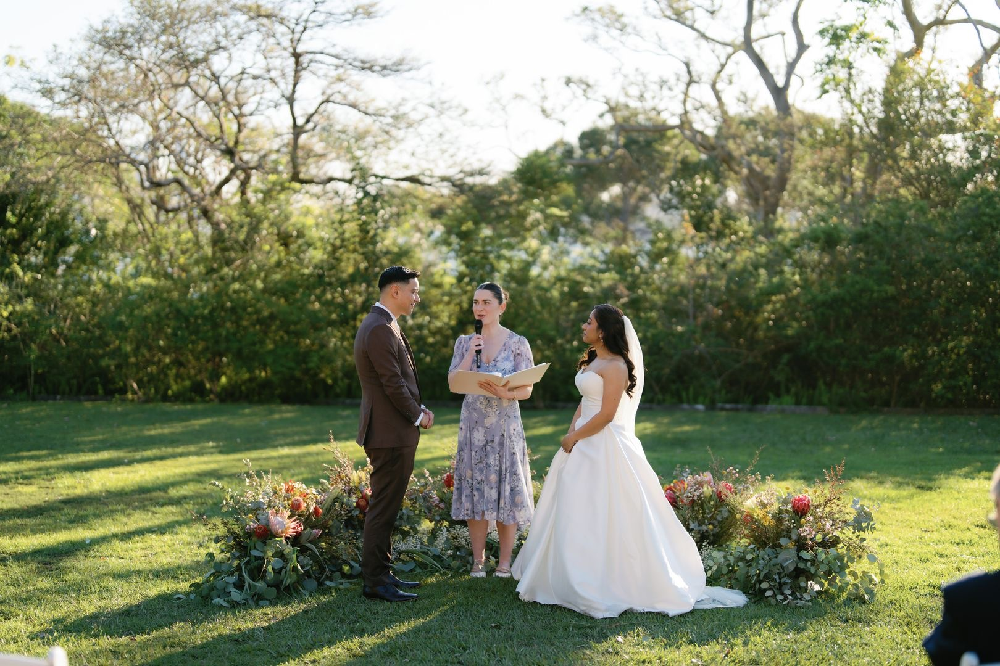
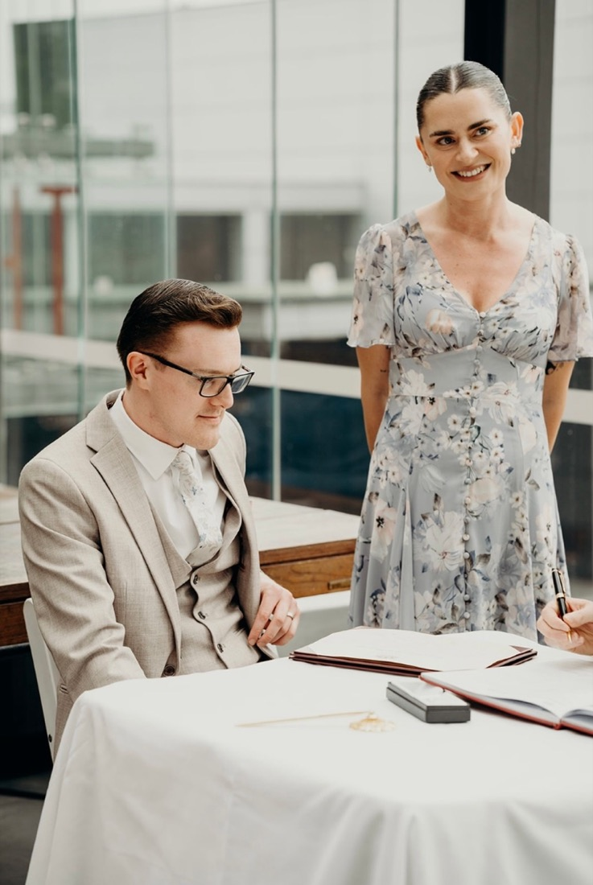
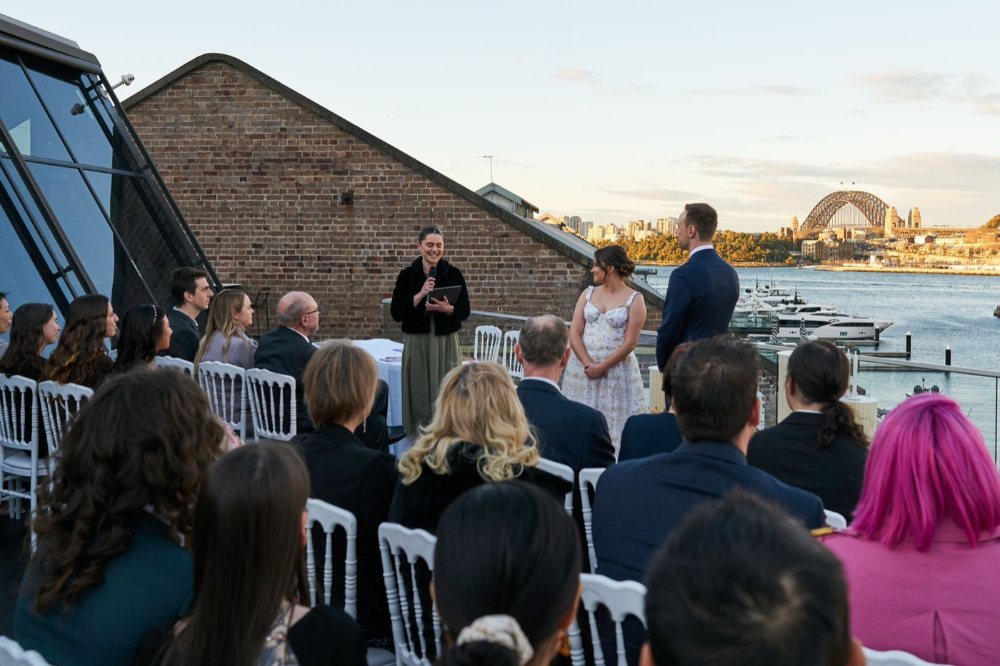
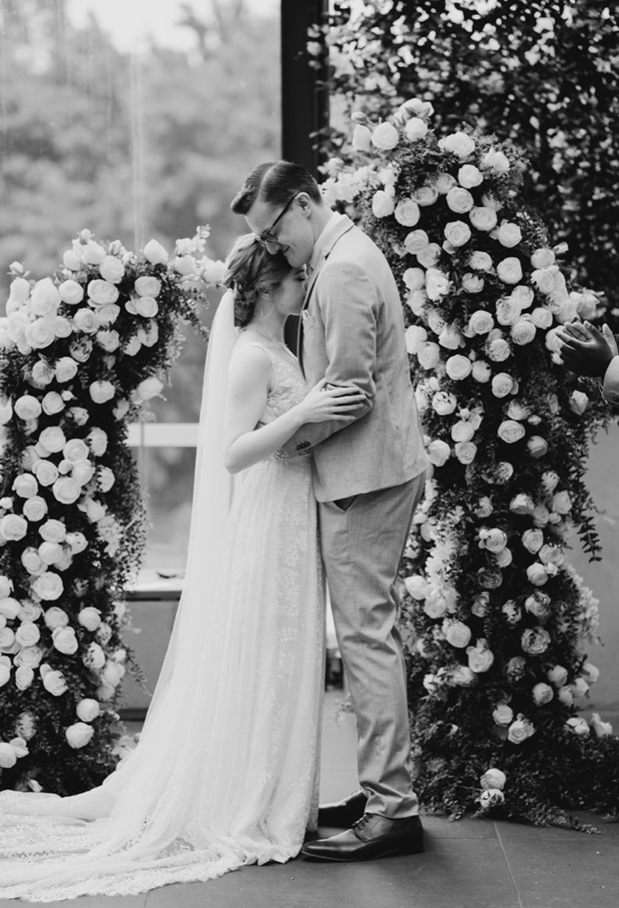
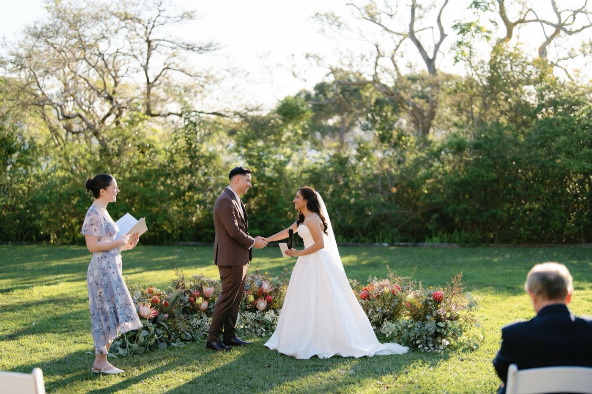

Emma Chapman
Celebrant, Sydney
Personal and intimate wedding ceremonies, with fresh, positive energy from the first meeting to the day itself.
Meet Emma
"I take pride in my ability to really listen to what couples want, whether it be a traditional or modern approach."
Emma is a Sydney celebrant who cares deeply about personal, intimate ceremonies. She works closely with each couple to write a ceremony that tells their own love story.
Her couples talk about how easy she makes it. One wrote that she "made the whole process so easy, and we felt so comfortable throughout the whole lead-up and on the day."

Three signatures and a table
On the day you sign three marriage certificates. Emma brings the paperwork and the pen.
Signing takes about five minutes, with two witnesses over 18.
The first
"The certificate retained by me for my records"
Emma
The second
"The certificate that will be forwarded to the Registry of Births, Deaths and Marriages for the registration of your marriage"
Emma lodges your marriage online, and orders your official certificate to your home at no extra charge.
The third
"The commemorative certificate that will be given to you as a record of your marriage"
Yours on the day.
Once, a couple's signing table never showed up. So Emma got creative, and they signed on the bride's brother's back.
It caused some laughter and a happy, memorable moment. If you choose Emma, her wooden signing table and two chairs come with her, at no extra charge.
Ceremonies
Custom ceremony
About 15 to 30 minutes
- A ceremony guide and a planning form
- Advice on the structure of your ceremony, and on your vows
- Thorough research
- Creative additions
- A wireless PA and microphone, for up to 150 guests
Short and sweet
About 5 to 10 minutes
Signing still takes about five minutes, so Emma suggests the ceremony runs at least a little longer than that.
With every wedding, at no extra charge
- All the legal paperwork, lodged for you
- Your official marriage certificate, ordered and posted to your home
- A portable, battery powered PA system with a wireless microphone
- A wooden signing table and two matching chairs
Emma's brochure has every inclusion and her prices. Ask her for a copy.
Before the day
No pressure to pay
You meet Emma first, with no obligation. The deposit is only due once you decide she's your celebrant, and the balance 14 days before the wedding.
Four songs
Most couples pick four: one for walking in, one for the signing plus a backup in case it runs long, and one to finish. A Spotify playlist and a friend on play is usually easiest. Live music works too.
A plan for the weather
Heat, rain, cold and wind all count. For an outdoor ceremony, Emma recommends having a wet weather option ready.
From her couples
"Emma took the time to make sure the ceremony felt special and intimate, and all our family and friends commented on how incredible and warm she was."
Emily J., married at Seacliff House, Easy Weddings
"She is calm and collected, always making sure we were at the centre of attention while gently guiding us through the process."
Luuc V., November 2025
"It was sweet with just enough humour and depth."
Tanith N., September 2025
"She is warm, thoughtful, organised and caring. She made us feel completely comfortable and made our ceremony feel so personal and meaningful."
Isabella K., August 2026
21 reviews, all five stars. Read them on Easy Weddings



Check your date
Tell Emma a little about your wedding. Your first meeting with her comes with no obligation.